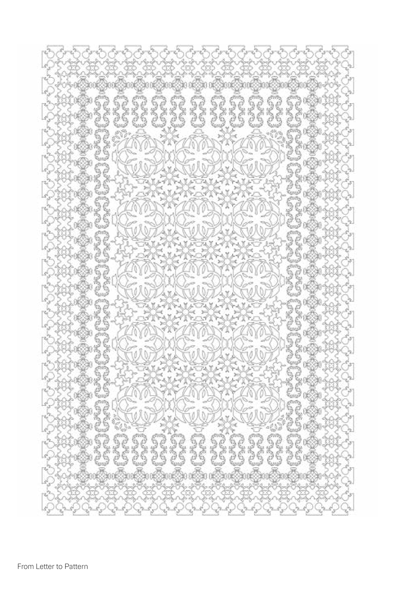
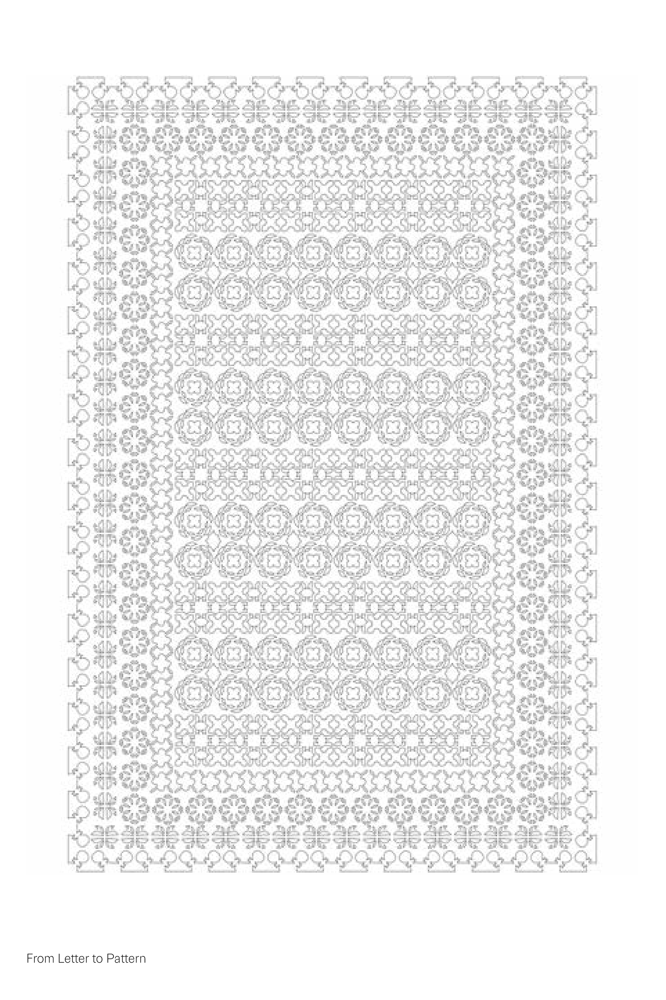
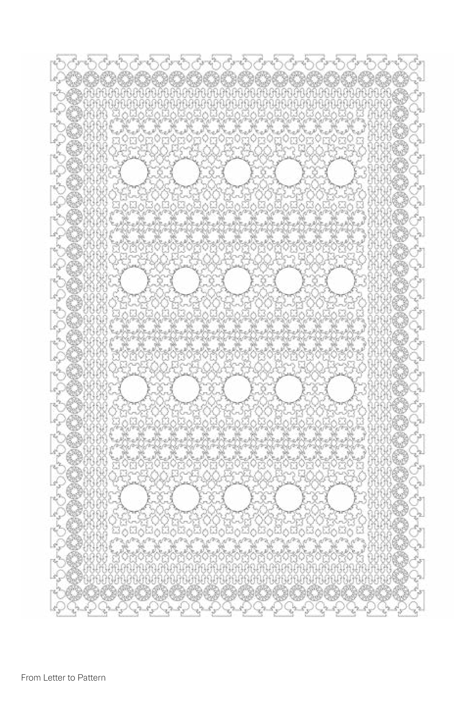

From Letter to Pattern explores how geometric patterns can be used as a deliberate tool to protect cultural and personal sanctity. I focused on the transition from language as a communicative tool to language as a visual system. I used the Al Azhar Display font by 29LT Type foundry letterset as the main source to deconstruct the alphabet into its most basic geometric parts. I isolated the forms and counterforms of each letter to use as modular building blocks for the patterns
Year: 2026
Medium: Pattern making


